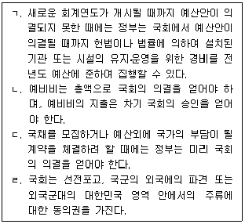
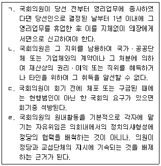

PSAT-헌법 (2022-02-26 기출문제)
1. 정당제도에 대한 설명으로 옳지 않은 것은? (다툼이 있는 경우 판례에 의함)
- 정당의 자유는 국민이 개인적으로 갖는 기본권일 뿐만 아니라, 단체로서의 정당이 가지는 기본권이기도 하다.
- ｢공직선거법｣상 법원의 판결에 의하여 선거일 현재 선거권이 정지된 18세 국민이라도 ｢정당법｣에 따른 정당의 발기인은 될 수 있다.
- 정당설립의 자유는 개인이 정당 일반 또는 특정 정당에 가입하지 아니할 자유, 가입했던 정당으로부터 탈퇴할 자유 등 소극적 자유도 포함한다.
- 정당이 최근 4년간 임기만료에 의한 국회의원선거 또는 임기만료에 의한 지방자치단체의 장선거나 시ㆍ도의회의원선거에 참여하지 아니한 때에는 당해 선거관리위원회는 그 등록을 취소한다.
(정답률: 77%)

2. 대한민국 헌정사에 대한 설명으로 옳은 것은?
- 1960년 제3차 개정헌법은 대법원장과 대법관의 선거제를 처음 채택하였다.
- 1972년 제7차 개정헌법은 중앙선거관리위원회를 헌법기관으로 처음 도입하였다.
- 1980년 제8차 개정헌법은 인간의 존엄과 가치를 최초로 규정하였다.
- 1987년 제9차 개정헌법은 국가의 적정임금보장을 최초로 규정하였다.
(정답률: 59%)
3. 공무원제도에 대한 설명으로 옳지 않은 것은? (다툼이 있는 경우 판례에 의함)
- '공무원이 선거운동의 기획에 참여하거나 그 기획의 실시에 관여하는 행위'를 금지하는 ｢공직선거법｣ 조항은 '공무원의 지위를 이용하지 아니한 행위'에까지 적용하는 한 헌법에 위반한다.
- 정당의 공직선거 후보자 선출은 자발적 조직 내부의 의사결정에 지나지 아니하므로, 정당의 내부경선에 참여할 권리는 헌법이 보장하는 공무담임권의 내용에 포함된다고 보기 어렵다.
- 선거에서의 중립의무가 부과되어야 하는 모든 공무원은 구체적으로 '자유선거원칙'과 '선거에서의 정당의 기회균등'을 위협할 수 있는 모든 공무원을 의미하므로, 여기에는 대통령, 국무총리, 국무위원, 도지사, 시장, 군수, 구청장 등 지방자치단체의 장은 물론 국회의원과 지방의회의원도 포함된다.
- 공적 관심의 정도가 약한 4급 이상의 공무원들까지 대상으로 삼아 모든 질병명을 아무런 예외 없이 공개토록 한 것은 입법목적 실현에 치중한 나머지 사생활 보호의 헌법적 요청을 현저히 무시한 것으로 해당 공무원들의 사생활의 비밀과 자유를 침해하는 것이다.
(정답률: 60%)
4. 직업의 자유에 대한 설명으로 옳은 것은? (다툼이 있는 경우 판례에 의함)
- '거짓이나 그 밖의 부정한 수단으로 운전면허를 받은 행위'에 대한 불이익 처분으로 '부정 취득한 해당 운전면허와 함께 해당 운전자가 보유하고 있는 나머지 운전면허'도 필요적으로 취소하도록 규정한 ｢도로교통법｣ 조항은 일반적 행동의 자유 또는 직업의 자유를 침해하지 않는다.
- 소송사건의 대리인인 변호사가 수형자를 접견하고자 하는 경우 소송계속 사실을 소명할 수 있는 자료를 제출하도록 규정하고 있는 ｢형의 집행 및 수용자의 처우에 관한 법률 시행규칙｣ 중 '수형자 접견'에 관한 부분은 변호사의 직업수행의 자유를 침해하지 않는다.
- ｢학원의 설립ㆍ운영 및 과외교습에 관한 법률｣에 따라 설립된 학원 및 ｢체육시설의 설치ㆍ이용에 관한 법률｣에 따라 설립된 체육시설에서 어린이통학버스를 운영함에 있어서 어린이 등과 함께 보호자를 의무적으로 동승하여 운행하도록 하는 ｢도로교통법｣ 조항은 학원 및 체육시설 운영자의 직업수행의 자유를 침해한다.
- “약사 또는 한약사가 아니면 약국을 개설할 수 없다.”고 규정한 ｢약사법｣ 조항은 법인을 구성하여 약국을 개설ㆍ운영하려고 하는 약사들 및 이들로 구성된 법인의 직업선택(직업수행)의 자유와 결사의 자유를 침해한다.
(정답률: 72%)
5. 근로의 권리에 대한 설명으로 옳은 것은? (다툼이 있는 경우 판례에 의함)
- 고용 허가를 받아 국내에 입국한 외국인근로자의 출국만기보험금을 출국 후 14일 이내에 지급하도록 한 ｢외국인근로자의 고용 등에 관한 법률｣ 조항 중 '피보험자등이 출국한 때부터 14일 이내' 부분은 해당 외국인근로자의 근로의 권리를 침해한다.
- 근로의 권리는 사회적 기본권으로서, 고용증진을 위한 사회적ㆍ경제적 정책을 요구할 수 있는 권리뿐만 아니라, 국가에 대하여 직접 일자리(직장)를 청구하거나 일자리에 갈음하는 생계비의 지급청구권을 의미한다.
- 해고예고제도의 적용제외사유 중 하나로 일용근로자로서 3개월을 계속 근무하지 아니한 자를 규정하고 있는 ｢근로기준법｣ 조항은 해당 일용근로자의 근로의 권리를 침해한다.
- 사용자로 하여금 2년을 초과하여 기간제근로자를 사용할 수 없도록 한 ｢기간제 및 단시간근로자 보호 등에 관한 법률｣ 조항은 해당 기간제근로자의 계약의 자유를 침해하지 않는다.
(정답률: 70%)
6. 평등권에 대한 설명으로 옳은 것은? (다툼이 있는 경우 판례에 의함)
- 초ㆍ중등학교 교원에 대하여는 정당가입을 금지하면서 대학교원에게는 허용하는 것은 기초적인 지식전달, 연구기능 등 직무의 본질이 서로 다른 점을 고려한 합리적 차별이므로 평등원칙에 반하지 아니한다.
- 국민참여재판 배심원의 자격을 만 20세 이상으로 정한 것은 ｢민법｣상 성년연령이 만 19세로 개정된 점이나 선거권 연령이 만 18세로 개정된 점을 고려해 볼 때, 만 19세 및 만 18세의 국민을 합리적인 이유 없이 차별취급 하는 것이다.
- 형벌체계에 있어서 법정형의 균형은 한치의 오차도 없이 반드시 실현되어야 하는 헌법상 절대원칙이므로, 특정한 범죄에 대한 형벌이 그 자체로서의 책임과 형벌의 비례원칙에 위반되지 않더라도 보호법익과 죄질이 유사한 범죄에 대한 형벌과 비교할 때 형벌체계상의 균형을 상실할 우려가 있는 경우에는 평등원칙에 반한다고 할 수 있다.
- 근로자의 날을 법정유급휴일로 할 것인지에 있어서 공무원과 일반근로자를 다르게 취급할 이유가 없으므로 근로자의 날을 공무원의 법정유급휴일로 정하지 않은 것은 공무원과 일반근로자를 자의적으로 차별하는 것에 해당하여 평등권을 침해한다.
(정답률: 73%)
7. 자기결정권에 대한 설명으로 옳지 않은 것은? (다툼이 있는 경우 판례에 의함)
- ｢형법｣상 자기낙태죄 조항은 입법목적을 달성하기 위하여 필요한 최소한의 정도를 넘어 임신한 여성의 자기결정권을 제한하고 있어 침해의 최소성을 갖추지 못하였고, 태아의 생명 보호라는 공익에 대하여만 일방적이고 절대적인 우위를 부여함으로써 법익균형성의 원칙도 위반하였으므로 과잉금지원칙을 위반하여 임신한 여성의 자기결정권을 침해한다.
- ｢성폭력범죄의 처벌 등에 관한 특례법｣상 정신적인 장애로 항거불능 또는 항거곤란 상태에 있음을 이용하여 사람을 간음한 사람을 무기징역 또는 7년 이상의 징역에 처하도록 규정한 것은 정신적 장애인의 성적 자기결정권을 침해한다.
- 전동킥보드의 최고속도를 25km/h 이내로 제한하는 것은 소비자가 그보다 빠른 제품을 구매하지 못하여 겪는 자기결정권 및 일반적 행동자유권의 제약에 비하여, 소비자의 생명ㆍ신체에 대한 위해 및 도로교통상의 위험을 방지하고 향후 자전거도로 통행이 가능해질 경우를 대비하여 소비자의 편의를 도모한다는 공익이 중대하므로 과잉금지원칙에 위반되지 않는다.
- 본인이 해부용 시체로 제공되는 것에 대해 반대하는 의사표시를 명시적으로 표시할 수 있는 절차도 마련하지 않고 본인의 의사와는 무관하게 인수자가 없는 시체를 해부용으로 제공될 수 있도록 규정하고 있는 ｢시체 해부 및 보존에 관한 법률｣ 조항은 사실상 연고가 없는 청구인의 시체 처분에 대한 자기결정권을 침해한다.
(정답률: 70%)
8. 집회의 자유에 대한 설명으로 옳지 않은 것은? (다툼이 있는 경우 판례에 의함)
- ｢집회 및 시위에 관한 법률｣상의 '시위'는 반드시 '일반인이 자유로이 통행할 수 있는 장소'에서 이루어져야 한다거나 '행진' 등 장소 이동을 동반해야만 성립하는 것은 아니다.
- 집회의 자유는 민주국가에서 사회ㆍ정치현상에 대한 불만과 비판을 공개적으로 표출케 함으로써 정치적 불만이 있는 자를 사회에 통합하고 정치적 안정에 기여하는 기능을 하는 중요한 수단이기 때문에, 평화적 수단을 이용한 의견의 표명뿐만 아니라 폭력을 사용한 의견의 강요 역시 헌법적으로 보호된다.
- 집회는 특별한 상징적 의미나 집회와 특별한 연관성을 갖는 장소에서 이루어져야 의견표명이 효과적으로 이루어질 수 있으므로 집회 장소를 선택할 자유는 집회의 자유의 실질적 부분을 형성한다.
- ｢집회 및 시위에 관한 법률｣상 미신고 옥외집회 또는 시위를 해산명령 대상으로 하면서 별도의 해산 요건을 정하고 있지 않더라도, 그 옥외집회 또는 시위로 인하여 타인의 법익이나 공공의 안녕질서에 대한 직접적인 위험이 명백하게 초래된 경우에 한하여 해산을 명할 수 있다.
(정답률: 77%)
9. 사생활의 비밀과 자유에 대한 설명으로 옳지 않은 것은? (다툼이 있는 경우 판례에 의함)
- 사생활의 비밀은 국가가 사생활영역을 들여다보는 것에 대한 보호를 제공하는 기본권이며, 사생활의 자유는 국가가 사생활의 자유로운 형성을 방해하거나 금지하는 것에 대한 보호를 의미한다.
- 인터넷회선 감청은 타인과의 관계를 전제로 하는 개인의 사적 영역을 보호하려는 헌법 제18조의 통신의 비밀과 자유 외에 헌법 제17조 사생활의 비밀과 자유도 제한한다.
- 공직자의 자질ㆍ도덕성ㆍ청렴성에 관한 사실이 개인적인 사생활에 관한 것이라면, 순수한 사생활의 영역에 있다고 보아야 할 것이므로 공적인 관심 사안에 해당할 수 없다.
- 자동차를 도로에서 운전하는 중에 좌석안전띠를 착용할 것인가 여부의 생활관계가 개인의 전체적 인격과 생존에 관계되는 '사생활의 기본조건'이라거나 자기결정의 핵심적 영역 또는 인격적 핵심과 관련된다고 보기 어려워, 운전할 때 운전자가 좌석안전띠를 착용할 의무는 운전자의 사생활의 비밀과 자유를 침해하는 것이라 할 수 없다.
(정답률: 84%)
10. 사회적 기본권에 대한 설명으로 옳지 않은 것은? (다툼이 있는 경우 판례에 의함)
- ｢국민기초생활 보장법 시행령｣상 '대학원에 재학 중인 사람'과 '부모에게 버림받아 부모를 알 수 없는 사람'을 조건 부과 유예의 대상자에 포함시키지 않았다는 사정만으로 국가가 인간다운 생활을 보장하기 위한 조치를 취함에 있어서 실현해야 할 객관적 내용의 최소한도 보장에 이르지 못하였다거나 헌법상 용인될 수 있는 재량의 범위를 명백히 일탈하였다고는 보기 어렵다.
- 지뢰피해자 및 그 유족에 대한 위로금 산정 시 사망 또는 상이를 입을 당시의 월평균임금을 기준으로 하고, 그 기준으로 산정한 위로금이 2천만 원에 이르지 아니할 경우 2천만 원을 초과하지 아니하는 범위에서 조정ㆍ지급할 수 있도록 한 ｢지뢰피해자 지원에 관한 특별법｣ 조항은 인간다운 생활을 할 권리를 침해한다고 볼 수 없다.
- 구｢공무원연금법｣상 유족급여수급권이 헌법상 보장되는 재산권에 포함되기 때문에 대통령령이 정하는 정도의 장애 상태에 있지 아니한 19세 이상의 자녀를 유족의 범위에서 제외한 것은 유족급여수급권의 본질적 내용을 침해하여 입법형성권의 범위를 벗어난 것이다.
- 산재피해 근로자에게 인정되는 산재보험수급권은 입법재량권의 행사에 의하여 제정된 ｢산업재해보상보험법｣에 의하여 비로소 구체화되는 '법률상의 권리'이며, 개인에게 국가에 대한 사회보장ㆍ사회복지 또는 재해예방 등과 관련된 적극적 급부청구권이 인정되는 것은 아니다.
(정답률: 67%)
11. 기본권 제한 및 한계에 대한 설명으로 옳지 않은 것은? (다툼이 있는 경우 판례에 의함)
- 금치처분을 받은 수형자에 대하여 집필의 목적과 내용 등을 묻지 아니하고 일체의 집필행위를 금지하는 것은 입법목적 달성을 위한 필요최소한의 제한이라는 한계를 벗어난 것으로서 과잉금지의 원칙에 위반된다.
- 방송사업자가 구｢방송법｣상 심의규정을 위반한 경우 방송통신위원회로 하여금 전문성과 독립성을 갖춘 방송통신심의위원회의 심의를 거쳐 '시청자에 대한 사과'를 명할 수 있도록 규정한 것은 침해의 최소성원칙에 위배되지 않는다.
- 정부에 대한 반대 견해나 비판에 대하여 합리적인 홍보와 설득으로 대처하는 것이 아니라 비판적 견해를 가졌다는 이유만으로 국가의 지원에서 일방적으로 배제함으로써 정치적 표현의 자유를 제재하는 공권력의 행사는 헌법의 근본원리인 국민주권주의와 자유민주적 기본질서에 반하는 것으로 그 목적의 정당성을 인정할 수 없다.
- 육군3사관학교 사관생도는 군 장교를 배출하기 위하여 국가가 모든 재정을 부담하는 특수교육기관인 육군3사관학교의 구성원이므로 그 존립 목적을 달성하기 위하여 필요한 한도 내에서 일반 국민보다 상대적으로 기본권이 더 제한될 수 있으나, 그러한 경우에도 법률유보원칙, 과잉금지원칙 등 기본권 제한의 헌법상 원칙들을 지켜야 한다.
(정답률: 86%)
12. 행정입법에 대한 설명으로 옳지 않은 것은? (다툼이 있는 경우 판례에 의함)
- 법령의 규정이 특정 행정기관에게 법령 내용의 구체적 사항을 정할 수 있는 권한을 부여하면서 권한행사의 절차나 방법을 특정하지 아니한 경우에는 수임 행정기관은 행정규칙이나 규정 형식으로 법령 내용이 될 사항을 구체적으로 정할 수 있다.
- 헌법 제75조는 위임입법의 근거를 마련함과 동시에, 위임은 구체적으로 범위를 정하여 하도록 하여 그 한계를 제시하며 행정부에 입법을 위임하는 수권법률의 명확성 원칙에 관한 것으로서, 법률의 명확성 원칙이 행정입법에 관하여 구체화된 특별규정이라고 할 수 있다.
- 행정규칙이 행정기관에 법령의 구체적 내용을 보충할 권한을 부여한 법령 규정의 효력에 근거하여 예외적으로 대외적 구속력이 인정되는 경우에도 행정규칙이나 규정의 '내용'이 상위법령의 위임범위를 벗어난 경우뿐만 아니라 상위법령의 위임규정에서 특정하여 정한 권한 행사의 '절차'나 '방식'에 위배되는 경우에는 대외적 구속력을 가지는 법규명령으로서 효력이 인정될 수 없다.
- 행정규칙은 법규명령과 같은 엄격한 제정 및 개정절차를 필요로 하지 아니하므로, 기본권을 제한하는 내용의 입법을 위임할 때에는 법규명령에 위임하는 것이 원칙이고, 고시와 같은 형식으로 입법위임을 할 때에는 법령이 전문적ㆍ기술적 사항이나 경미한 사항으로서 업무의 성질상 위임이 불가피한 사항에 한정되나, 이때 법률의 위임은 반드시 구체적ㆍ개별적으로 한정된 사항에 대해 행하여져야 하는 것은 아니다.
(정답률: 87%)
13. 국무총리 및 국무위원에 대한 설명으로 옳은 것은?
- 국무위원이 그 직무집행에 있어서 헌법이나 법률을 위배한 때에는 국회는 탄핵의 소추를 의결할 수 있다.
- 국무총리가 대통령에게 국무위원의 해임을 건의하는 경우 국회의 동의를 얻어야 한다.
- 국무위원은 소관사무에 관하여 대통령령이나 총리령의 위임 또는 직권으로 부령을 발할 수 있다.
- 국무위원은 행정각부의 장 중에서 국무총리의 제청으로 대통령이 임명한다.
(정답률: 43%)
14. 대통령의 권한에 대한 설명으로 옳은 것은?
- 대통령이 국회의 임시회의 집회를 요구할 때에는 기간과 집회요구의 이유를 명시하여야 한다.
- 대통령은 법률이 정하는 바에 의하여 사면ㆍ감형 또는 복권을 명할 수 있고, 특별사면의 경우 이를 명하려면 국회의 동의를 얻어야 한다.
- 계엄을 선포할 때에는 대통령은 지체없이 국회에 보고하고 승인을 얻어야 한다.
- 국회의 요구가 있을 때에는 대통령은 출석ㆍ답변하여야 하며, 대통령이 출석요구를 받은 때에는 국무총리 또는 국무위원으로 하여금 출석ㆍ답변하게 할 수 있다.
(정답률: 60%)
15. 감사원에 대한 설명으로 옳은 것은? (다툼이 있는 경우 판례에 의함)
- 감사원장 및 감사위원은 국회의 동의를 얻어 대통령이 임명한다.
- 감사원이 지방자치단체의 자치사무에 대하여 합목적성 감사까지 한다면 지방자치제도의 본질적 내용을 침해하는 것이다.
- 감사원은 원장을 포함한 5인 이상 11인 이하의 감사위원으로 구성한다.
- 감사원장은 중임할 수 없으나, 감사위원은 1차에 한하여 중임할 수 있다.
(정답률: 64%)
16. 문화국가원리에 대한 설명으로 옳지 않은 것은? (다툼이 있는 경우 판례에 의함)
- 우리 헌법상 문화국가원리는 견해와 사상의 다양성을 그 본질로 하며, 이를 실현하는 국가의 문화정책은 불편부당의 원칙에 따라야 하는바, 모든 국민은 정치적 견해 등에 관계없이 문화 표현과 활동에서 차별을 받지 않아야 한다.
- 국가의 문화육성의 대상에는 원칙적으로 모든 사람에게 문화창조의 기회를 부여한다는 의미에서 모든 문화가 포함되므로 엘리트문화뿐만 아니라 서민문화, 대중문화도 그 가치를 인정하고 정책적인 배려의 대상으로 하여야 한다.
- 헌법은 문화국가를 실현하기 위하여 보장되어야 할 정신적 기본권으로 양심과 사상의 자유, 종교의 자유, 언론ㆍ출판의 자유, 학문과 예술의 자유 등을 규정하고 있는바, 이들 기본권은 견해와 사상의 다양성을 그 본질로 하는 문화국가원리의 불가결의 조건이라고 할 것이다.
- 오늘날 문화국가에서의 문화정책은 문화가 생겨날 수 있는 문화풍토를 조성하는 것이 아니라 문화 그 자체에 초점을 두어야 한다.
(정답률: 84%)
17. 국회의 권한에 대한 설명으로 옳은 것만을 모두 고른 것은?

- ㄱ, ㄴ
- ㄱ, ㄷ, ㄹ
- ㄴ, ㄷ, ㄹ
- ㄱ, ㄴ, ㄷ, ㄹ
(정답률: 77%)
18. 국회의 조직 및 운영에 대한 설명으로 옳지 않은 것은? (다툼이 있는 경우 판례에 의함)
- 국회의원 총선거 후 처음 선출된 의장과 부의장의 임기는 그 선출된 날부터 개시하여 의원의 임기 개시 후 2년이 되는 날까지로 한다.
- 헌법 제50조제1항의 의사공개원칙은 모든 국회의 회의를 항상 공개하여야 하는 것은 아니나 이를 공개하지 아니할 경우에는 헌법에서 정하고 있는 일정한 요건을 갖추어야 함을 의미하는 것이며, 헌법 제50조제1항 단서가 정하고 있는 회의의 비공개를 위한 절차나 사유는 그 문언이 매우 구체적이므로 예외적인 비공개 사유는 문언에 따라 엄격하게 해석되어야 한다.
- 의장이 심신상실 등 부득이한 사유로 의사표시를 할 수 없게 되어 직무대리자를 지정할 수 없을 때에는 임시의장을 선출하여 의장의 직무를 대행하게 한다.
- 국회에 제출된 법률안 기타의 의안은 회기 중에 의결되지 못한 이유로 폐기되지 아니하나, 국회의원의 임기가 만료된 때에는 그러하지 아니하다.
(정답률: 67%)
19. 국회의원에 대한 설명으로 옳은 것만을 모두 고른 것은? (다툼이 있는 경우 판례에 의함)

- ㄱ, ㄷ
- ㄱ, ㄹ
- ㄴ, ㄷ
- ㄴ, ㄹ
(정답률: 79%)
20. 국회의 회의 및 의사운영에 대한 설명으로 옳지 않은 것은?
- 정기회의 회기는 100일을, 임시회의 회기는 30일을 초과할 수 없으며, 임시회는 대통령 또는 국회재적의원 4분의 1 이상의 요구에 의하여 집회된다.
- 본회의는 재적의원 5분의 1 이상의 출석으로 개의하고, 의사는 헌법이나 ｢국회법｣에 특별한 규정이 없으면 재적의원 과반수의 출석과 출석의원 과반수의 찬성으로 의결한다.
- 국회가 행정각부의 장을 탄핵소추하기 위해서는 국회재적의원 3분의 1 이상의 발의가 있어야 하며 그 의결은 국회재적의원 과반수의 찬성이 있어야 한다.
- 의장은 임시회의 집회 요구가 있는 경우 집회기일 2일 전에 공고하며, 이 경우 둘 이상의 집회 요구가 있을 때에는 그 요구서가 먼저 제출된 것을 공고한다.
(정답률: 54%)
21. 헌법재판에 대한 설명으로 옳지 않은 것은? (다툼이 있는 경우 판례에 의함)
- 유예기간을 두고 있는 법령의 경우, 헌법소원심판 청구기간의 기산점은 그 법령의 시행일이 아니라 유예기간 경과일이다.
- 헌법소원제도는 개인의 주관적인 권리구제뿐만 아니라 헌법질서를 보장하는 기능도 있으므로 주관적 권리보호이익은 소멸하였다고 하더라도, 그러한 침해행위가 앞으로도 반복될 위험이 있거나 당해 분쟁의 해결이 헌법질서의 수호ㆍ유지를 위하여 긴요한 사항이어서 헌법적으로 그 해명이 중대한 의미를 지니는 경우에는 심판청구의 이익을 인정할 수 있다.
- 헌법재판소에서 법률의 위헌결정, 탄핵의 결정, 권한쟁의에 관한 인용결정 또는 헌법소원에 관한 인용결정을 할 때에는 재판관 6인 이상의 찬성이 있어야 한다.
- 공권력의 불행사로 인한 기본권침해는 그 불행사가 계속되는 한 기본권침해의 부작위가 계속된다 할 것이므로, 공권력의 불행사에 대한 헌법소원심판은 그 불행사가 계속되는 한 기간의 제약없이 적법하게 청구할 수 있다.
(정답률: 50%)
22. 권한쟁의심판에 대한 설명으로 옳지 않은 것은? (다툼이 있는 경우 판례에 의함)
- 지방자치단체가 기관위임사무를 처리할 권한이 침해되었다고 주장하면서 권한쟁의심판을 청구하는 것은 부적법하다.
- 권한쟁의심판을 청구하려면 청구인과 피청구인 상호간에 헌법 또는 법률에 의하여 부여받은 권한의 존부 또는 범위에 관하여 다툼이 있어야 하고, 피청구인의 처분 또는 부작위가 헌법 또는 법률에 의하여 부여받은 청구인의 권한을 침해하였거나 침해할 현저한 위험이 있는 경우이어야 한다.
- 국민 개인이 대법원장을 상대로 제기한 국가기관 간의 권한쟁의심판에서 '국민'인 청구인은 그 자체로는 헌법에 의하여 설치되고 헌법과 법률에 의하여 독자적인 권한을 부여받은 기관이라고 할 수 없으므로, '국민'인 청구인은 권한쟁의심판의 당사자가 되는 '국가기관'이 아니다.
- 지방자치단체의 의결기관인 지방의회와 지방자치단체의 집행기관인 지방자치단체장 간의 내부적 분쟁도 ｢헌법재판소법｣에 의하여 헌법재판소가 관장하는 지방자치단체 상호간의 권한쟁의심판에 해당한다고 볼 수 있다.
(정답률: 62%)
23. 법관에 대한 설명으로 옳은 것은?
- 법관으로서 퇴직 후 3년이 지나지 아니한 사람은 대통령비서실의 직위에 임용될 수 없다.
- 대법관회의는 대법관 전원의 3분의 2 이상의 출석과 출석인원 과반수의 찬성으로 의결한다.
- 법관은 탄핵 또는 벌금 이상의 형의 선고에 의하지 아니하고는 파면되지 아니하며, 징계처분에 의하지 아니하고는 정직ㆍ감봉 기타 불리한 처분을 받지 아니한다.
- 법관이 중대한 신체상 또는 정신상의 장해로 직무를 수행할 수 없을 때에는, 대법관인 경우에는 법원행정처장의 제청으로 대법원장이 퇴직을 명할 수 있고, 판사인 경우에는 인사위원회의 심의를 거쳐 판사가 소속된 법원의 법원장이 퇴직을 명할 수 있다.
(정답률: 50%)
24. 선거관리에 대한 설명으로 옳지 않은 것은? (다툼이 있는 경우 판례에 의함)
- 정당의 후보자 추천에 관한 단순한 지지ㆍ반대의 의견개진 및 의사표시라 하더라도 ｢공직선거법｣상 선거운동에 해당한다.
- 선거일전 180일부터 선거일까지 인터넷상 선거와 관련한 정치적 표현 및 선거운동을 금지하고 처벌하는 것은 후보자 간 경제력 차이에 따른 불균형 및 흑색선전을 통한 부당한 경쟁을 막고, 선거의 평온과 공정을 해하는 결과를 방지한다는 입법목적 달성을 위하여 적합한 수단이라고 할 수 없다.
- 선거공영제의 내용은 우리의 선거문화와 풍토, 정치문화 및 국가의 재정상황과 국민의 법감정 등 여러 가지 요소를 종합적으로 고려하여 입법자가 정책적으로 결정할 사항으로서 넓은 입법형성권이 인정되는 영역이라고 할 것이다.
- 중앙선거관리위원회는 법령의 범위 안에서 선거관리ㆍ국민투표관리 또는 정당사무에 관한 규칙을 제정할 수 있으며, 법률에 저촉되지 아니하는 범위 안에서 내부규율에 관한 규칙을 제정할 수 있다.
(정답률: 60%)
25. 조례에 대한 설명으로 옳지 않은 것은? (다툼이 있는 경우 판례에 의함)
- 지방자치단체는 법령의 범위에서 그 사무에 관하여 조례를 제정할 수 있다. 다만, 주민의 권리 제한 또는 의무 부과에 관한 사항이나 벌칙을 정할 때에는 법률의 위임이 있어야 한다.
- 조례는 특별한 규정이 없으면 공포한 날부터 20일이 지나면 효력을 발생한다.
- 지방자치단체는 그 고유사무인 자치사무와 법령에 따라 지방자치단체에 속하는 사무에 관하여 법령에 위반되지 않는 범위 안에서 스스로 조례를 제정할 수 있지만, 국가사무인 기관위임사무에 관하여는 개별 법령에서 일정한 사항을 조례로 정하도록 위임하고 있더라도 조례를 제정할 수 없다.
- 지방자치단체는 헌법상 자치입법권이 인정되고, 법령의 범위 안에서 그 권한에 속하는 모든 사무에 관하여 조례를 제정할 수 있다는 점과 조례는 선거를 통하여 선출된 그 지역의 지방의원으로 구성된 주민의 대표기관인 지방의회에서 제정되므로 지역적인 민주적 정당성까지 갖고 있다는 점을 고려하면, 조례에 위임할 사항은 헌법 제75조 소정의 행정입법에 위임할 사항보다 더 포괄적이어도 헌법에 반하지 않는다.
(정답률: 72%)